Utrangeringsverdi er den estimerte salgsverdien av et anleggsmiddel ved utløpet av dets brukstid, også kalt restverdi eller sluttverdi. Dette er en kritisk komponent i avskrivningsberegninger og påvirker både regnskapsføring og investeringsbeslutninger.
Utrangeringsverdi inngår som en sentral del av anskaffelseskostnadsvurderinger og må vurderes nøye for å sikre korrekt beregning av avskrivningsgrunnlaget.
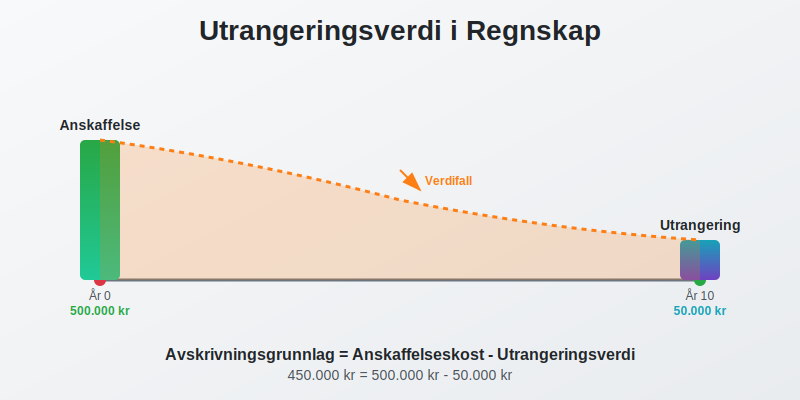
Hva er Utrangeringsverdi?
Utrangeringsverdi representerer den forventede markedsverdien av en eiendel når virksomheten planlegger å avhende den ved slutten av brukstiden. Dette er ikke det samme som eiendelens verdi hvis den ble solgt i dag, men en prognose for fremtidig verdi.
Grunnleggende Prinsipper
Utrangeringsverdi baserer seg på flere faktorer:
- Markedsforhold på utrangeringstidspunktet
- Eiendelens tilstand etter brukstid
- Teknologisk utvikling som kan påvirke verdien
- Etterspørsel etter brukte eiendeler i markedet
- Avskrivningsmønstre som gjenspeiler verdifall
Forhold til Avskrivning
Utrangeringsverdi er direkte knyttet til avskrivningsberegninger:
Avskrivningsgrunnlag = Anskaffelseskost - Utrangeringsverdi
Dette betyr at en høyere utrangeringsverdi gir lavere årlige avskrivninger, mens en lavere utrangeringsverdi øker avskrivningskostnadene.
Beregning av Utrangeringsverdi
Faktorer som Påvirker Utrangeringsverdi
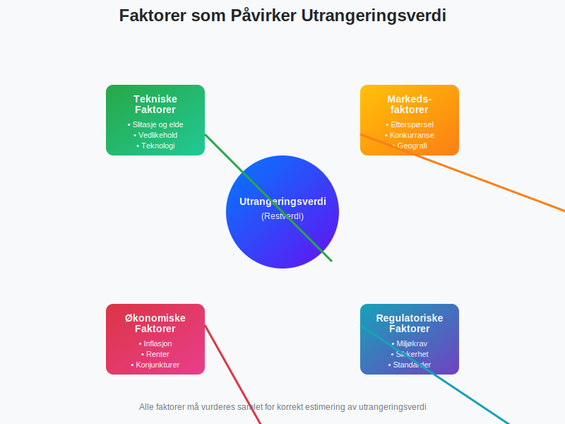
Tekniske Faktorer
- Slitasje og elde: Fysisk tilstand ved brukstidsutløp
- Teknologisk foreldelse: Utviklingen av ny teknologi
- Vedlikeholdstilstand: Kvaliteten på vedlikehold gjennom brukstiden
- Oppgraderinger: Forbedringer som kan øke verdien
Markedsfaktorer
- Andrehåndsmarked: Tilgjengelighet og aktivitet
- Etterspørsel: Behov for brukte eiendeler av samme type
- Konkurrerende produkter: Nye alternativer som påvirker verdi
- Geografisk beliggenhet: Regional variasjon i verdier
Juridiske og Regulatoriske Faktorer
- Miljøkrav: Nye reguleringer som kan påvirke brukbarhet
- Sikkerhetsstandarder: Endrede krav som kan kreve oppgraderinger
- Bransjestandarder: Utvikling av nye krav og normer
Estimeringsmetoder
1. Sammenlignbar Salgsdata
Bruk historiske salgsdata for lignende eiendeler:
- Analyser tidligere salg av identiske eller sammenlignbare eiendeler
- Juster for inflasjon og markedsutvikling
- Vurder eiendelens spesifikke egenskaper
2. Ekspertvurdering
Profesjonelle takstmenn kan gi estimater basert på:
- Bransjeerfaring og markedskunnskap
- Teknisk vurdering av eiendelens tilstand
- Analyse av markedstrender
3. Teoretiske Modeller
Bruk finansielle modeller som tar hensyn til:
- Nåverdi av fremtidige kontantstrømmer
- Inflasjonsjusteringer
- Risikopremier for usikkerhet
Praktiske Eksempler
Eksempel 1: Firmabil
Et selskap kjøper en firmabil for 400.000 kr med planlagt brukstid på 5 år.
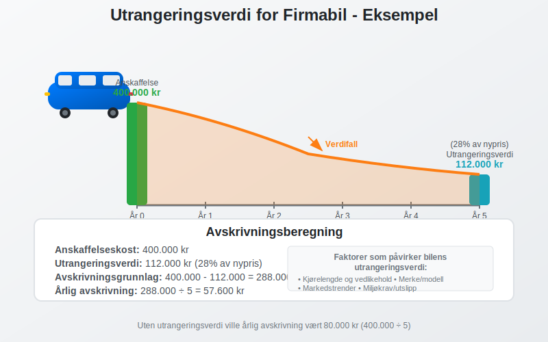
Vurdering av utrangeringsverdi:
- Markedspris for 5 år gamle biler av samme merke: 25-30% av nypris
- Estimert utrangeringsverdi: 400.000 × 28% = 112.000 kr
- Avskrivningsgrunnlag: 400.000 - 112.000 = 288.000 kr
- Årlig avskrivning: 288.000 ÷ 5 = 57.600 kr
Eksempel 2: Produksjonsutstyr
En maskin kjøpes for 800.000 kr med forventet brukstid på 10 år.
Estimering av utrangeringsverdi:
- Skrapverdi av metall og komponenter: 50.000 kr
- Potensielt annenhåndsmarked: Begrenset, spesialisert utstyr
- Teknologisk utvikling: Rask, kan redusere verdi betydelig
- Estimert utrangeringsverdi: 75.000 kr (konservativt anslag)
Beregning:
- Avskrivningsgrunnlag: 800.000 - 75.000 = 725.000 kr
- Årlig lineær avskrivning: 725.000 ÷ 10 = 72.500 kr
Eksempel 3: IT-utstyr
Servere kjøpes for 300.000 kr med brukstid på 4 år.
Vurdering:
- Teknologisk foreldelse: Svært rask i IT-bransjen
- Andrehåndsmarked: Begrenset for eldre servere
- Sikkerhetskrav: Kan kreve oppdateringer som ikke er mulig
- Estimert utrangeringsverdi: 15.000 kr (hovedsakelig komponentverdi)
Regnskapsføring og Utrangeringsverdi
Påvirkning på Regnskapet
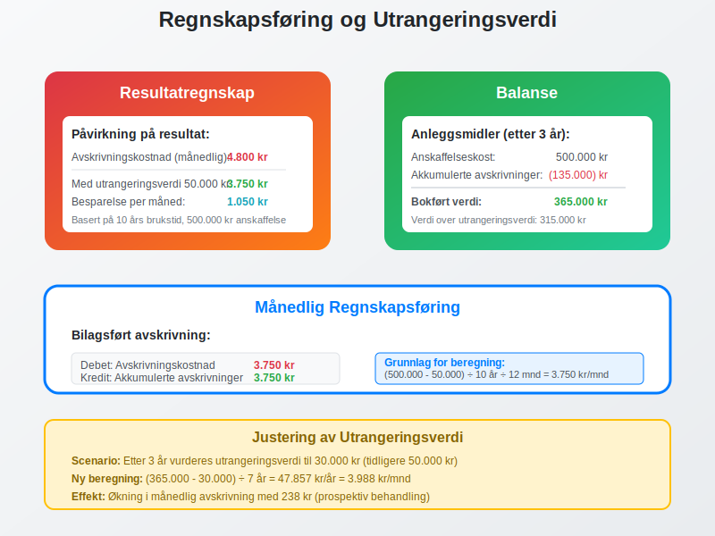
Resultatregnskap
- Lavere avskrivningskostnader med høy utrangeringsverdi
- Høyere avskrivningskostnader med lav utrangeringsverdi
- Jevnere kostnadsfordeling over brukstiden
Balanse
- Bokført verdi påvirkes av avskrivningsmønsteret
- Realistisk verdivurdering ved korrekt estimat
- Nedskrivningsvurderinger kan bli nødvendig hvis estimat endres
Justering av Utrangeringsverdi
Utrangeringsverdi bør revurderes regelmessig:
Årsaker til Justering
- Markedsendringer: Vesentlige endringer i etterspørsel
- Teknologisk utvikling: Raskere eller langsommere enn forventet
- Regulatoriske endringer: Nye krav som påvirker verdien
- Vedlikeholdsstatus: Bedre eller dårligere enn planlagt
Regnskapsmessig Behandling
Når utrangeringsverdi endres prospektivt:
Nytt avskrivningsgrunnlag = Bokført verdi - Ny utrangeringsverdi
Ny årlig avskrivning = Nytt avskrivningsgrunnlag ÷ Gjenværende brukstid
Eksempel på justering:
- Opprinnelig utrangeringsverdi: 100.000 kr
- Ny vurdering etter 3 år: 60.000 kr
- Bokført verdi: 250.000 kr
- Gjenværende brukstid: 2 år
- Ny årlig avskrivning: (250.000 - 60.000) ÷ 2 = 95.000 kr
Skattemessige Konsekvenser
Utrangeringsverdi og Skatt
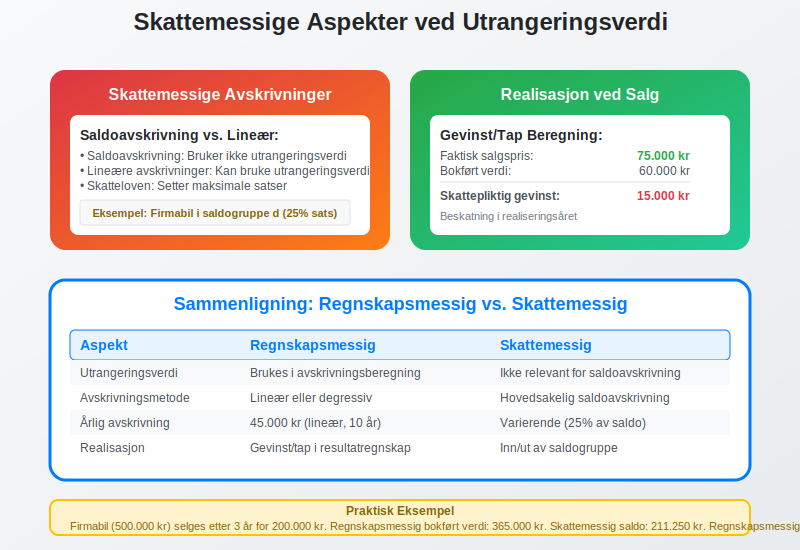
Avskrivninger for Skatteformål
- Saldoavskrivning bruker ikke utrangeringsverdi direkte
- Lineære avskrivninger kan bruke utrangeringsverdi i beregningen
- Skattemessige regler kan avvike fra regnskapsmessige vurderinger
Realisasjon ved Salg
Når eiendelen faktisk selges, oppstår gevinst eller tap:
Gevinst/Tap = Faktisk salgspris - Bokført verdi ved salg
Skattemessig behandling:
- Gevinst: Skattepliktig inntekt (kan inngå i saldogruppe)
- Tap: Fradragsberettiget kostnad
- Timing: Beskatning/fradrag i realiseringsåret
Bransjespecifikke Vurderinger
Transport og Logistikk
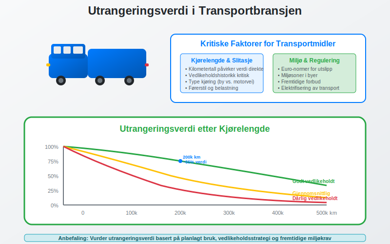
Faktorer for transportmidler:
- Kjørelengde: Påvirker slitasje og verdi
- Vedlikeholdshistorikk: Kritisk for videre brukbarhet
- Miljøkrav: Nye utslippsstandarder kan redusere verdi
- Merke og modell: Enkelte merker holder verdien bedre
Teknologi og IT
Spesielle hensyn for IT-utstyr:
- Rask teknologisk utvikling reduserer utrangeringsverdi betydelig
- Sikkerhetsoppdateringer kan stoppe, noe som påvirker brukbarhet
- Energieffektivitet blir viktigere og påvirker verdien
- Kompatibilitet med nye systemer er avgjørende
Produksjon og Industri
Industrielt utstyr krever spesiell vurdering:
- Spesialisering: Høyt spesialisert utstyr har lavere utrangeringsverdi
- Modulær oppbygning: Kan gi høyere verdi ved salg av deler
- Industristandard: Standardisert utstyr lettere å selge videre
- Vedlikeholdskostnader: Påvirker attraktiviteten for kjøpere
Digitale Verktøy og Modeller
Verdsettelsessystemer
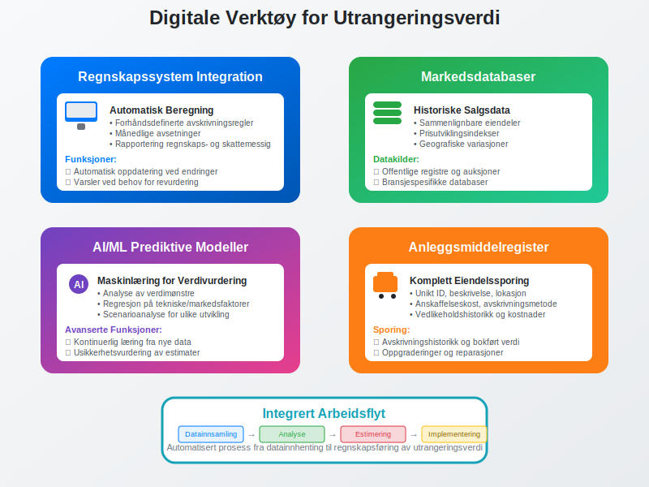
Moderne verktøy for å estimere utrangeringsverdi:
Markedsdatabaser
- Historiske salgsdata for sammenlignbare eiendeler
- Prisutviklingsindekser for justeringer
- Geografiske variasjoner i verdier
Prediktive Modeller
- Maskinlæring for å analysere verdimønstre
- Regresjon basert på tekniske og markedsmessige faktorer
- Scenarioanalyse for ulike markedsutvikling
Integrasjon med Regnskapssystemer
- Automatisk oppdatering av avskrivningsberegninger
- Varsler ved behov for revurdering
- Rapportering av avvik mellom estimat og faktisk verdi
Utfordringer og Risikofaktorer
Vanlige Feil i Estimering
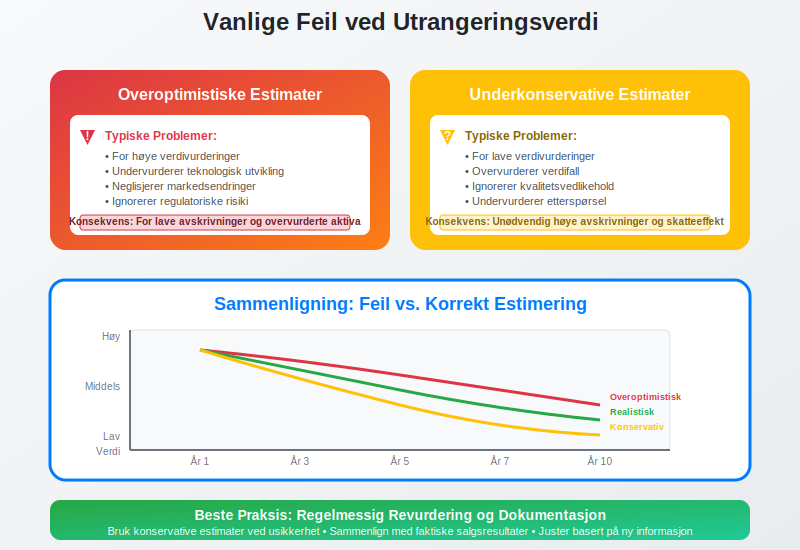
Overoptimistiske Estimater
- For høye vurderinger gir for lave avskrivninger
- Undervurderer teknologisk utvikling
- Neglisjerer markedsendringer
Underkonservative Estimater
- For lave vurderinger gir unødvendig høye avskrivninger
- Overvurderer verdifall
- Ignorerer kvalitetsvedlikehold
Risikohåndtering
Regelmessig Revurdering
- Årlige vurderinger av store eiendeler
- Kontinuerlig overvåking av markedsutvikling
- Dokumentasjon av endringer og begrunnelser
Konservative Tilnærminger
- Forsiktighetsprinsippet: Velg lavere verdier ved usikkerhet
- Sensitivitetsanalyse: Test påvirkning av ulike estimater
- Buffere: Inkluder margin for uforutsette endringer
Strategiske Beslutninger
Påvirkning på Investeringsbeslutninger
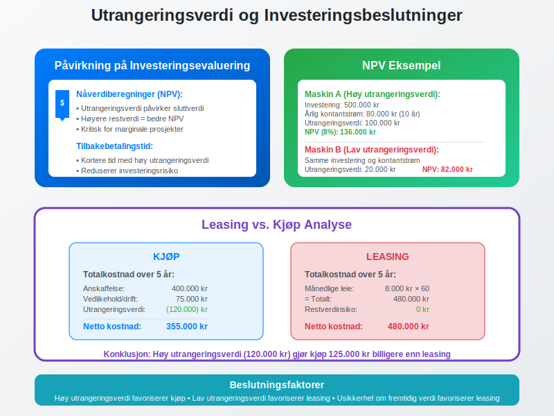
Investeringsevaluering
- Nåverdiberegninger inkluderer utrangeringsverdi
- Tilbakebetalingstid påvirkes av estimert restverdi
- Totalomkostnad over eiendelens levetid
Leasing vs. Kjøp
- Høy utrangeringsverdi kan favorisere kjøp
- Lav utrangeringsverdi kan gjøre leasing mer attraktivt
- Risikooverføring ved leasing reduserer usikkerhet
Timing av Utrangering
Optimal Utrangeringstidspunkt
- Vedlikeholdskostnader øker over tid
- Teknologisk foreldelse akselererer verdifall
- Markedsmuligheter kan variere
Erstatningsplanlegging
- Koordinering med budsjett- og investeringsplaner
- Teknologiroadmaps påvirker timing
- Kapasitetsbehov setter rammer for utrangering
Forhold til Andre Regnskapsbegreper
Sammenheng med Kapitalkostnader
Utrangeringsverdi påvirker totalkapitalkostnaden:
- Lavere utrangeringsverdi øker kapitalkostnaden
- Høyere utrangeringsverdi reduserer kapitalkostnaden
- Viktig faktor i avkastningsberegninger
Relasjon til Balanse og Verdivurdering
- Realistisk balanseverdier avhenger av korrekte utrangeringsverdier
- Nedskrivningsvurderinger må ta hensyn til endrede utrangeringsverdier
- Genvinnbart beløp kan påvirkes av utrangeringsverdi
Regulatoriske Krav og Standarder
Norske Regnskapsstandarder
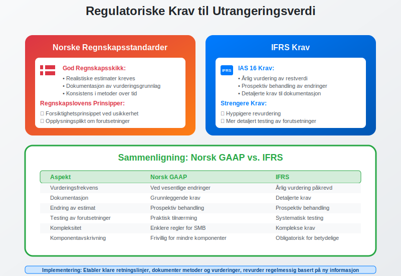
God Regnskapsskikk
- God regnskapsskikk krever realistiske estimater
- Dokumentasjon av vurderingsgrunnlag
- Konsistens i metoder over tid
Regnskapslovens Krav
- Forsiktighetsprinsippet ved usikre estimater
- Sammenstillingsprinsippet i avskrivningsberegninger
- Opplysningsplikt om vesentlige forutsetninger
Internasjonale Standarder
IFRS-krav
- IAS 16 regulerer materielle anleggsmidler
- Årlig vurdering av brukstid og restverdi
- Prospektiv behandling av endringer
Forskjeller mellom IFRS og Norsk GAAP
- Hyppigere revurdering under IFRS
- Mer detaljerte krav til dokumentasjon
- Strengere krav til testing av forutsetninger
Fremtidige Trender og Utvikling
Teknologisk Påvirkning
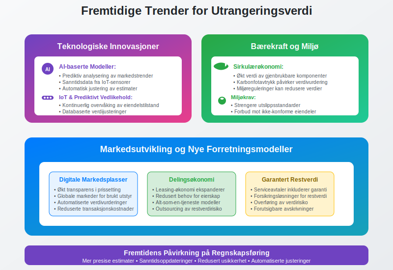
Digitalisering og Automatisering
- AI-baserte modeller for verdivurdering
- Sanntidsdata fra IoT-sensorer på eiendeler
- Prediktivt vedlikehold påvirker verdiutvikling
Miljø- og Bærekraftskrav
- Sirkulærøkonomi kan øke verdien av gjenbrukbare komponenter
- Miljøreguleringer kan redusere verdien av ikke-konforme eiendeler
- Karbon-footprint blir viktigere i verdivurderinger
Markedsendringer
Nye Forretningsmodeller
- Leasing-økonomi reduserer behov for kjøp av brukt utstyr
- Serviceavtaler kan inkludere garantert utrangeringsverdi
- Digitale markedsplasser øker transparens i prissetting
Praktisk Implementering
Etablering av Rutiner
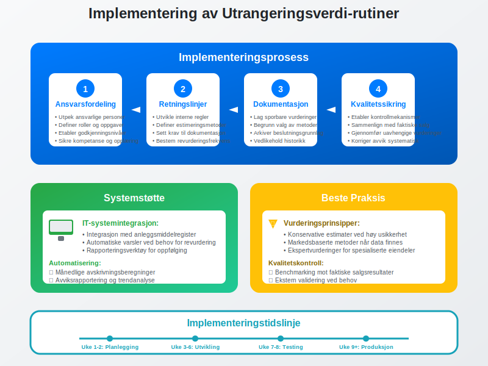
Organisatoriske Prosesser
- Ansvarsfordeling: Klargjør hvem som skal estimere og godkjenne
- Retningslinjer: Utvikle interne regler for estimering
- Dokumentasjon: Sikre sporbarhet i vurderinger
- Kvalitetssikring: Etabler kontrollmekanismer
Systemstøtte
- Integrasjon med anleggsmiddelregister
- Automatiske varsler ved behov for revurdering
- Rapporteringsverktøy for oppfølging og analyse
Beste Praksis
Vurderingsprinsipper
- Konservative estimater ved høy usikkerhet
- Markedsbaserte metoder når data er tilgjengelig
- Ekspertvurderinger for spesialiserte eiendeler
- Regelmessige oppdateringer basert på ny informasjon
Kvalitetskontroll
- Dokumentasjon av alle forutsetninger og metoder
- Benchmarking mot faktiske salgsresultater
- Sensitivitetsanalyse for kritiske parametere
- Ekstern validering ved behov
Relaterte Begreper og Konsepter
For å forstå utrangeringsverdi fullt ut, bør du også kjenne til:
- Avskrivning - Hvordan utrangeringsverdi påvirker avskrivningsberegninger
- Anleggsmidler - Eiendelene som har utrangeringsverdi
- Anskaffelseskost - Utgangspunktet for avskrivningsberegning
- Nedskrivning - Når bokført verdi overstiger gjenvinnbart beløp
- Saldoavskrivning - Skattemessig avskrivningsmetode
- Balansebasert verdivurdering - Prinsipielle tilnærminger til verdivurdering
Konklusjon
Utrangeringsverdi er en kritisk komponent i regnskapsføring og finansiell planlegging som krever nøye vurdering og regelmessig oppfølging. Korrekt estimering av utrangeringsverdi påvirker:
- Avskrivningsberegninger og kostnadsfordeling over tid
- Investeringsbeslutninger og kapitalbudsjettering
- Skattemessige konsekvenser av eiendelsforvaltning
- Balanseverdier og finansiell rapportering
Ved å etablere robuste prosesser for estimering, overvåking og justering av utrangeringsverdi kan virksomheter:
- Optimalisere sine investeringsbeslutninger
- Forbedre nøyaktigheten i finansiell rapportering
- Redusere risiko knyttet til eiendelsverdier
- Sikre regelverkskomplians og god regnskapsskikk
Utrangeringsverdi representerer således et viktig bindingsledd mellom strategisk planlegging, operasjonell drift og finansiell rapportering i moderne bedriftsstyring.